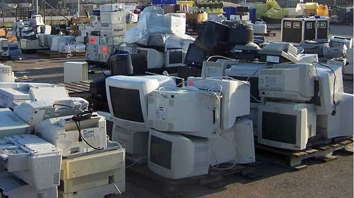

Point of View
Courtesy Fort Hood U.S. Army Environmental Command
Recycling E-Waste on the Grey Market
By Christine Holden
Posted July 6, 2015
Recycling e-waste has become necessary as unwanted electronic trash piles ever higher. However, the recycling of this waste has social and environmental effects as well.
As business becomes more aware of sustainability issues, and as governments place policy that demands it does so, companies look for cheap, efficient ways to fulfill these goals. One issue green policies seek to confront is that of e-waste. Many tons of unwanted electronics are generated each year as old devices are exchanged for newer and better versions. Since many parts of old devices may still be used and a need exists for the rare metals found therein, recycling becomes both a profitable and an ethical action. However, recycling is a costly endeavor. Organizations are choosing to outsource the process. Much e-waste gets shipped overseas, where it is then recycled under unsafe conditions by workers untrained and under-equipped.
E-waste contains a host of toxic chemicals such as cadmium, arsenic, and mercury. That qualifies it as hazardous waste, the export of which is banned by many countries, including those of the European Union. Yet much e-waste is still being exported under the guise of second-hand goods. The rest is smuggled into poorly patrolled ports along the costs of India, Africa, China, and many others. Although China banned the import of e-waste in 2000, it remains a primary dumping ground.
.Much of this e-waste ends up in the unorganized sector. Rajya Sabha defines the “unorganized sector” as “an assortment of small and informal businesses not governed by any stringent health and environmental regulations [1]. Some of these businesses work out of their homes, exposing family members to toxic dangers. Some of these workers are children.It is here that the following activities are performed:
- Cathode ray tubes are manually broken and sold for reuse. This glass contains lead and is not safe for food contact or high heat. If exposed to such, it releases fumes that are toxic to inhale.
- Gas torches are used to melt the solder off circuit boards to separate computer chips and other parts. The boards are then dismantled by hand.
- Stripped circuit boards are bathed in acid then scraped manually to extract the precious metals. This is done without protective equipment. The scraping occurs over open drains or on riverbanks, releasing dangerous chemicals into the water.
- Circuit boards, wires and other parts are burned to remove rubber and plastic. This releases toxic chemicals into the air.
- Plastics are melted for reuse in an unsafe manner, releasing toxic emissions.
These procedures expose workers to a multitude of hazardous materials, posing health risks to the workers, those residing in the communities in which they work, and the environment in which they live.
There are many benefits to recycling. Proper procedures can extract valuable resources, including gold, silver, and brass, and bypass the environmental footprint of mining. Recycling enables developing nations to benefit from the extraction of these metals at a much reduced cost, helping to stimulate economic growth. However, in the interest of human rights and environmental heath, this must be done in both a socially responsible and environmentally sound way.
The United Nations Environment Programme recommends the following objective [2]:
- Handle hazardous and toxic substances in an environmentally sound manner.
- Prevent the release of hazardous emissions during recycling procedures.
- Recover valuable materials efficiently.
- Create economically and sustainable business.
- Consider the social implications.
In this way, the benefits of recycling can be realized without long term health effects for workers and long term environmental effects for the planet.
Works Cited
1. Rajya Sabha. E_Waste in India (Research Unit [Larrdis], June 2011), Accessed January 18, 2015.
2. Mathias Schluep et al. Recycling - From E-Waste to Resources (United Nations Environment Programme and United Nations University, 2009), Accessed January 18, 2015.